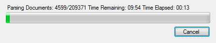

Introduction
This application parses documents from a Lotus Notes application so you can transfer them to a SQL database.
It allows you to pick the application from a Domino server or on your local computer. It then parses the documents automatically to find out the type of information in each field at about 20,000 documents per minute. After parsing the documents you can save the information to a SQL dump file which can be imported into any SQL database or the program can directly insert it into a MySQL database. The information is formatted so that each document "Form" is a separate table with the documents being individual rows. Each field that has multiple values is transferred to it's own table with a foreign key linking it to the document in it's "Form" table.
Tutorial
- Click [Download as .zip] above.
- Unzip the file and go to \NSF2SQL\bin\Debug
- Open NSF2SQL.exe
- Click [Search Server] to search for an application on a Domino Server or [Search Computer] to browse your computer for a .nsf file
- Enter the server information if searching a serveror just the password if opening a local file
- Select the database to export and click [Export Documents]
- Wait until the program is done parsing the documents
- Once all documents are parsed it will ask if you want to export to a server
 Click [Yes] to have the sql imported directly to a MySQL server or click [No] to have the SQL dumped to a file so you can import it a different way
Click [Yes] to have the sql imported directly to a MySQL server or click [No] to have the SQL dumped to a file so you can import it a different way - If you chose to have the program import it directly to a MySQL server it will ask for your server informationDatabase is the name you want for the new database
- If you chose to dump the SQL to a file it will be saved to a file called "export.sql" on your desktop and it will be opened after the program creates it
Support
If you need anything contact me any time at me@tonybrix.info
Thanks!